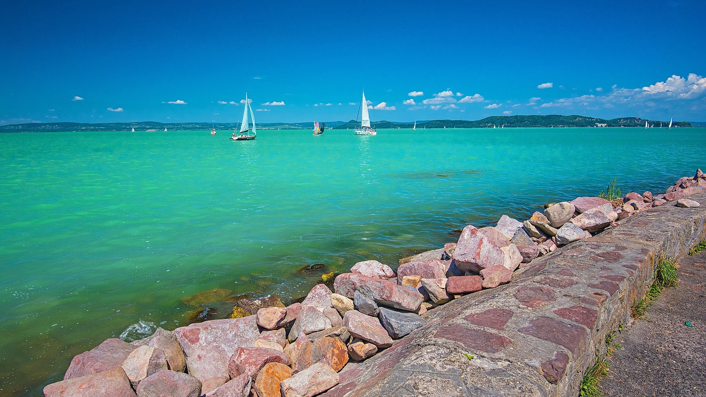
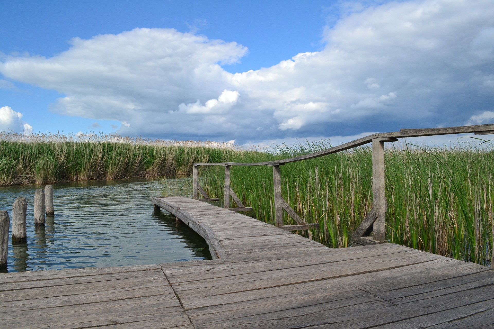
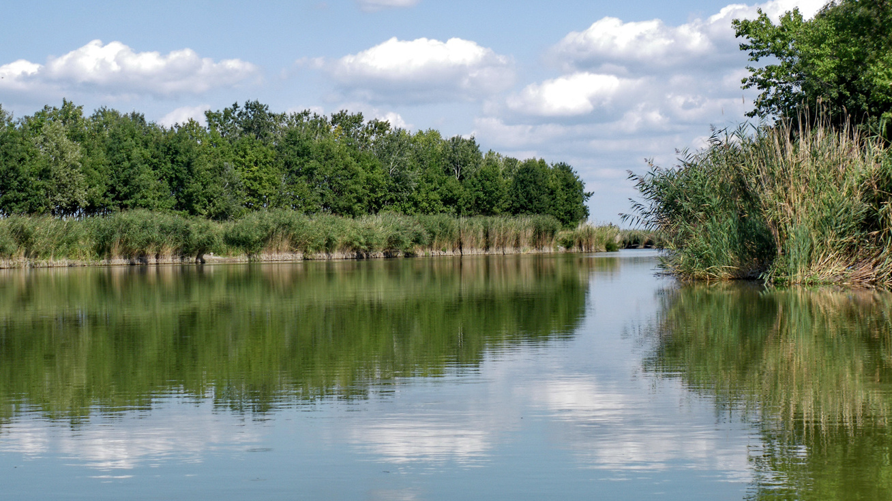

A Balaton (költői nevén „a magyar tenger”, becenevén Balcsi, németül: Plattensee, latinul: Lacus Pelso, horvátul: Blatno jezero) tó a Dunántúlon, Közép-Európa legnagyobb tava, Magyarország vízrajzának meghatározó eleme. Könnyen felmelegedő, sekély vize kiválóan alkalmassá teszi a fürdésre és sportolásra, élővilága rendkívül gazdag, a táj változatos vulkanikus kúpjaival sok tekintetben egyedi.  Típusa geológiailag a Velencei-tóhoz hasonlóan tektonikus eredetű, sekély vizű ároktó. 77 km hosszú, legkisebb szélessége Tihanynál 1,5 km, legnagyobb 12,7 km Balatonvilágos és Balatonalmádi között, átlagos szélessége 7,7 km, felülete 600 km². Legmélyebb pontja a Tihanyi-szoros legmélyebb árkában az úgynevezett a „Tihanyi-kút”, ahol a tó medre 11-12,5 méter mélyen van. Más forrás szerint a kút mélysége 10,67 méter. A Szántód-Tihany kompjárat útvonalától mintegy 100-150 méterre keletre, a parttól körülbelül 300 méterre van. Az 59 800 hektár területen fekvő vizes élőhely keleti medencéjét a Tihanyi-félsziget választja el a tó többi részétől. Déli partjánál medre sekélyebb. Északi oldalán található a badacsonyi borvidék és a Tapolcai-medence, jellegzetes vulkáni tanúhegyeivel. A Balaton és környéke Budapest mellett az ország turisztikailag leglátogatottabb területe, 2004-ben elnyerte az Örökségünk – Somogyország Kincse címet is. Környékén gyógyfürdők, termálforrások találhatók. A „Balaton fővárosa” címet hivatalosan Keszthely viseli, de Siófok a déli part, Balatonfüred pedig az északi part fővárosaként tekint magára. Minden évben megrendezik a tóhoz kapcsolódó három nagy tömegsporteseményt: a tókerülő Kékszalag Nemzetközi Vitorlásversenyt, a Révfülöp–Boglár közötti, a Balatont keresztben átszelő távúszóversenyt, legújabban pedig a Fonyód-Badacsony-Fonyód útvonalon bármilyen kézi hajtású vízi járművel a Balaton-átevezést.
A Tisza-tó (1988-ig Kiskörei víztározó) Magyarország második legnagyobb tava és legnagyobb mesterséges tava a Tiszán, az Alföld északi részén. Létrehozásának legfontosabb okai a Kiskörei Vízerőmű működéséhez szükséges egyenletes vízhozam biztosítása volt, valamint az ugyanebben az időszakban, Tiszaújvárosban telepített új Tiszai Hőerőmű működéséhez szükséges magas vízszint biztosítása duzzasztással.  A tó feltöltése után magyar turisták kezdték el látogatni a tavat, mert sokkal olcsóbb volt a Balatonnál. Megkezdődött a falusi turizmus, a tó körül kempingek, szállodák, strandok épültek. A part mentén hat szabadstrand, Tiszafüreden pedig termálfürdők kínálnak fürdési lehetőséget. Abádszalók környékén a vízi sportok széles skálája gyakorolható, beleértve motoros vízi sportokat is. A horgászat a szabályok betartása mellett engedélyezett. A Tisza-tó vadvízi világa gyalog, kerékpárral, lóháton és csónakkal is bejárható. A Tisza-tavi madárrezervátum védett terület, csak vezetővel látogatható. 2012-ben nyílt meg Poroszlón a Tisza-tavi Ökocentrum, mely interaktív módon mutatja be a Tisza-tó és a Tisza-völgy természeti értékeit és élővilágát. A látogatóközpont 2600 m²-es főépülete többek között kiállításoknak, rendezvényeknek ad otthont, de kilátó is található itt. A 735 000 liter össztérfogatú akváriumrendszer a legnagyobb édesvízű akvárium Európában. A főépületet 7 hektáros szabadidőpark veszi körül állatbemutatókkal és játszóterekkel; skanzenje a 19. századi életmódot mutatja be. Az ökocentrum kikötőjéből vízitúrák és kishajós kirándulások indulnak.
Szelid neve a közeli Várdomb erõdítményével és a török idõk harcaival függhet össze, ugyanis a török csapatok a magyar túlerõt látva, megállásra és kompromisszumokra kényszerültek "megszelidültek" ezen a területen. A tavat a még a Duna vize mélyített ki évezredekkel ezelõtt. Jelenleg 4km hosszú, szélessége átlagosan 150-200m között mozog, átlagos vízmélysége 3-4 méter, vize nyáron akár 28°C-ra is felmelegedhet, így fürdõzésre kiválóan alkalmas. A talajból sok nátrium-magnézium-karbonát és nátrium-jodid oldódik ki, ezért már a középkorban sebgyógyításra használták, ma inkább idegrendszeri, hormonális és reumatikus bántalmak kezelésére ajánlják. Vize szagtalan a gyógyfürdõkkel ellentétben, jelenleg még nem minõsített gyógyvíz, ezért üdülõfalu létesült a környezetében.  Egy másik legenda szerint Bence vitéz úgy meghajszolta lovait hogy azok patái elvástak. De miután a lovak hosszasan a tó vizében állva ittak sebeik gyorsan rendbe jöttek. Szeliden 2000-ben újították fel a Kastély Szállót, a jövõbeni tervek szerint gyógykezelésekre alkalmas létesítményeket is létrehoznak benne. A kastély egykoriban a kalocsai érsek pihenõ kastélya volt. A Szelidi-tavat 360 hektáros természetvédelmi terület övezi, ami növényi gazdagságával a Kiskunsági Nemzeti Park egyik gyöngyszeme. A tó környékén így kellemes sétákat vagy kerékpártúrákat tehet az idelátogató. A vendégeket egy ingyenesen látogatható szabad strand és egy nagyobb igényesen kialakított fizetõstrand várja. A parton vízibiciklik, csónakok, kenuk, és surfök bérelhetõk, így akár rövidebb vízi túrák is tehetõk. A gyerekeket kiépített játszóterek és egy óriás vízicsúzda várja. A horgászat kedvelõi sem csalódhatnak a tóban amúr, keszeg, kárász, ponty és törpeharcsa rendszeresen akad a horgokra.